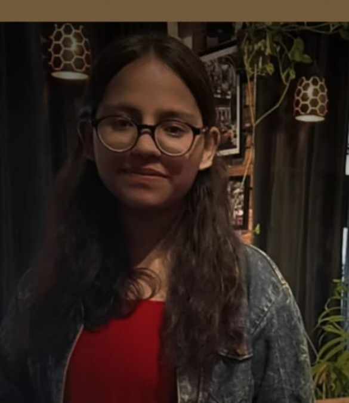

Programming
Java · C
Building foundationsCOMPUTER SCIENCE · BUILDING IN PUBLIC
I’m Iqra, a B.Tech Computer Science student learning to turn ideas into useful software—one concept, one project, and one problem at a time.

Java & backend fundamentals · DSA · Generative AI
✳01 — A LITTLE ABOUT ME
I’m a Computer Science undergraduate who enjoys understanding how software works beneath the surface.
My current path centres on Java, data structures and algorithms, databases, and backend development. Alongside that, I’m exploring Generative AI and how it can become part of thoughtful, practical products.
I’m still learning, and I prefer honest progress over inflated claims: build something, understand what broke, and improve it.
Small, consistent steps can build things that once felt out of reach.STAY CURIOUS. KEEP SHIPPING.
02 — THE TOOLKIT
A snapshot of what I’m learning and practising—not a claim of mastery.
Java · C
Building foundationsData Structures & Algorithms
Practising regularlySQL · DBMS · JDBC · Spring Boot
Learning and applyingGenerative AI · AI-assisted products
Exploring03 — SELECTED WORK
Exploring a web experience for voice-clone detection, with a frontend, a Spring Boot API, and a planned Python-based analysis service.
More projects will appear here as they’re built, tested, and documented. I’d rather show real progress than fill the page with pretend case studies.
04 — THE LEARNING JOURNEY
Strengthening programming fundamentals and practising problem-solving patterns while studying core CS subjects.
ONGOINGLearning SQL, JDBC, REST APIs, and Spring Boot, with a focus on understanding how each layer fits together.
ONGOINGStudying Generative AI concepts and experimenting with ways to combine AI ideas with practical software development.
EXPLORINGLearning how to find suitable repositories, understand issues, and build the habits needed for meaningful open-source contributions.
NEXT STEPSWHAT GUIDES ME
01 Understand the fundamentals
02 Be honest about what I know
03 Learn by building and reflecting
05 — LET’S CONNECT
I’m open to learning from others, discussing projects, and connecting with people who care about building useful technology.
Say hello